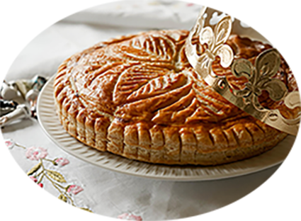

Galette des rois à la frangipane

Pour 8 personnes
Préparation : 30 mn
Cuisson 30 mn
Ingrédients
- 2 Pates feuilletées
- 125 gde sucre
- 60 g beurre mou
- 2 œufs
- 150 g de poudre d’amende
- 1 gousse de vanille
- 2 c à soupe de rhum
- 1 œuf pour dorer la galette avec une pincée de sel
- Facultatif : 50 g de crème pâtissière
Recette
- Fouettez le sucre et le beurre mou, puis ajoutez la poudre d'amande
- Grattez les graines de la gousse de vanille et ajoutez-les à la préparation
- Ajoutez 2 oeufs entiers et le rhum ou autre (fleur d'oranger, amande amère.
- Incorporez la créme pâtissière (env. 50g) et mélanger
- Disposez un cercle de pâte, déposez de la crème amande dessus en laissant 2 cm de pâte tout autour, mouillez légèrement avec un pinceau et de l'eau
- Placez la fève et recouvrez avec le deuxième disque de pâte feuilletée légèrement plus grand, souder les bords en appuyant tout autour
- Dorez le dessus de la galette avec un oeuf battu avec un peu de sel (Ca va le rendre bien liquide et facile à étaler)
- Placez la galette au frigo 30 minutes, sortez la, dessinez vos motifs avec une lame de couteau sans percer la pâte, dorez une seconde fois
- Cuire à 180°C pendant 40 minutes en moyenne, un peu plus si la galette est grande ou si la pâte feuilletée est faite maison
Comment faire pour avoir une superbe couleur dorée ?
Cela se fait en 2 temps…
Commencez par battre un oeuf entier avec une 1/2 cuil. à café de sel, le sel va liquéfier votre oeuf qui sera franchement facile à badigeonner ensuite.
Badigeonnez avec un pinceau une première fois le dessus de votre galette, puis mettez la 30 min au frigo, faire des dessins dessus avec la lame d’un couteau bien pointu sera plus facile.
Puis après, dorez une seconde, mettre au frais encore 15 min avant d’enfourner à four chaud 180°C. Comptez 30 à 50 minutes de cuisson selon la taille de la galette. Elle doit être bien dorée !
|